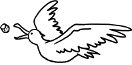

Seni düşünmemek şehir, ne kadar kolaymış. Bir başka ülkeye, bir başka şehre, bir başka ben'e yolculuk etmek, oraya varınca da usul usul, sinsi sinsi ve kendi kendine dahi itiraf etmeden yeni yerine yerleşmeye başlamak değil sebebi. İsmini anmamak değil; ne de öyle bile bile kaçınmak seni başkalarıyla konuşmaktan. Tam tersine, rahatlıkla, sıklıkla, umarsızca anıyorum adını, kalabalıklar arasında. Yeter ki kendimi seni düşünürken yalnız, yalnızken seni düşünür bulmayayım. Ne zaman açılsa bahsin, o incecik sohbet aralığından içeri ben de uzatıyorum başımı, bakıyorum sana uzaktan. Uzaktan bile kocaman görünüyorsun, öylesine heyula, her türlü fizik kanununun ötesinde, uzaklaştıkça senden büyüyorsun önümde. Bakmayı sürdürmüyorum, kesik ve kısık bakışım, epi topu bir an. Çekiyorum kafamı, kapanıyor aralık. Siluetin düşüyor üzerimize, duvarda canavar gölgeleri bırakıyor en ufak kımıltın bile. Gördüklerimi kendime saklayıp, görmediklerimi dillendiriyorum. Böylece sorduklarında "Nasıl bir şehir İstanbul?" diye, zorlanmadan başlayabiliyorum anlatmaya. İllaki soruyorlar. İllaki sorsunlar istiyorum. Seni hiç konuşmamanın yolunu, seni bol bol, avuç avuç saça saça konuşmakta buldum. Sen söz konusu olduğunda hiçbir şey söylemeden çok şey söylemenin usturuplu yollarına vâkıfım. Sen söz konusu olduğunda hiçbir şey söylemek gelmiyorum içimden. Bu yüzden ben, böyle seri, böyle teklemeden konuşabiliyorum senin hakkında Amerikalılarla. Senden İngilizce, senin dilin, benim dilim, bizim dilimiz olmayan bir dilde bahsedebilmenin verdiği özgürlüğe sığınıyorum. Geçici yabancı diller kadar âlâ bir paravan yoktur kalıcı yabancılıklarımıza. Hani şu bir türlü geçmeyenlere. Hani şu kendi evimizde olduğumuzda bile... Görülmesin diye içerisi, sıkı sıkı çekiyorum perdeleri. Perdelerin üzerine desen desen asıyorum, seni tarif eden turistik akademik estetik kelimeleri. Ne fazla, ne eksik. Tastamam kaç kelimeyle anlatmam gerekiyorsa soran insanlara, o kadar kelime harcayarak.
En çok, tatile İstanbul'a gitmeyi planlayan çiftlerle konuşmayı seviyorum. Onların gelecek planlarının arasına sıkıştırıp saklayıveriyorum seninle olan geçmişimden bana kalan, sana kalan, bize kalan sırları. İllaki gitmeleri farz yerleri anlatıyorum. Nerede güzel yemek yersiniz, hangi cami, hangi kilise, hangi çarşı, hangi yüzümüzü tatmak isterdiniz, Batılı-modern-laik, dilerseniz otantik, hayır efendim bence vebali boyundan büyük bir kelime şu "fundamentalizm" ama siz ille de kullanacaksanız onu yahut sosyolojik gözlem yapayım filan diyorsanız elbette buyurun şu şu şu semtlere, Fatih'e de gidin tabii, yok, merak etmeyin bir şey olmaz, bence mezarlıkları ihmal etmeyin, bir ülkenin insanlarının yaşadığı değil yaşamadığı hayatları merak ediyorsanız eğer, ama pardon, gene sürçtü dilim, bu gezinin konusu bu değildi değil mi?... Ben en iyisi baştan arz edeyim, mesela hangi sokakta ne var, kuruldu mu filanca semtteki falanca pazar, muhakkak uğrayın falan tarihi mekâna ve aman illaki şu şu şu lokantalara; siz en iyisi her gün başka bir şey yiyin, aralarda da muhakkak simit; vapura da binin, martıları da besleyin, şuranın zeytinyağlıları, oranın balığı rakısı, nerenin ahtapot salatası, şu sokaktan geçmeyi aman ihmal etmeyin, gitmişken filancaya da uğrayın, pek sever sizin gibi şaşkın ve şaşmaz turistlerle tanışmayı, sonra muhakkak için İstanbul'da, sakın ha ayık gezmeyin... Siz sorun ben anlatayım efendim. Yeter ki sormayın bunca sevdiğin şehirde niye yoksun diye? Yeter ki sormayın dönememek nasıl bir şey ve sahi niye, ama niye?
Siz turistik sorular sorun bana, ben anlatayım ballandıra ballandıra. Adalar'a gitmeyi, pazarlık etmeyi, şarap içmeyi fakat şarap içiyorum havasına girmemeyi ve aman Hüseyin Rahmi Gürpınar'ın dantellerini görmeyi ihmal etmeyin. Kim mi? Kendisi yazar. Yok yok, çevrilmedi eserleri İngilizceye, okuyamazsınız maalesef, siz sorun onu da ben özetleyeyim, fazla uzatmadan, kapsül bilgilerle aktarabilirim; onun da yaralarına dokunmadan dokundurtmadan şöylece tozunu alır gibi, deşmeden, paket yapıp sunabilirim. Eşcinselliğinden bahsetmeyiz mesela, o boğucu Babıâli'ye küskünlüklerinden de, biz öyle şeyler konuşmayı sevmeyiz. Çocuklarımız bilmez, biz bilmeyiz. Türkiye'de yazarlar söz konusu oldu mu iki hususu bilmemeyi tercih ederiz: Ölmüş yazarların sadece kitaplarına odaklanmaktan, hayattayken nasıl ve neler yaşadıklarını bilmeyiz, biiiiir. Yaşayan yazarların da sadece yaşamlarına odaklanmaktan kitaplarında neler yazdıklarını bilmeyiz, ikiiii. Onun için bugün yaşayan aklı başında her yazar saklanmak zorunda kalır kendini perde perde çekerek geriye; bilmesinler ki fazla, az biraz daha baksınlar bana değil de yazılarıma... Sahi neden mi bu kadar rahatsız olur bazılarımız o kapanmayan, kapaksız GÖZ'den? Aman turist efendiler, o nasıl soru öyle, GÖZZZ'den daha rahatsız edici ne olabilir bu âlemde? Mesela bendeniz Celal Tanrı'nın kapanmayan sema gözü üzerimde diye, ayıptır söylemesi korkudan ve utançtan banyoya, tuvalete gidememiştim bir dönem küçüklüğümde, çocukluk işte, pardon nasıl buyurdunuz, ihlal ve işgal eden nazara karşı bireyselliğimizi nasıl mı geliştiriyoruz? Yanlış tespit efendim, yanlış jargon, biz bireyci bir toplum değiliz. Bizde entelektüellerimiz bile yaşar cemaatler halinde. Hem sonra birey olmak-bireysellik-bir kalmak filan, sağlam pabuçlar değil bunlar, siz yoksa İskandinav ülkelerinde intihar oranlarının ne kadar yüksek olduğunu bilmez misiniz, bizde kimse intihar edemesin diye midye misali yapışırız birbirimize, alışkanlıklarımıza, tekerrürlerimize, evimize... Evi olmayanlar mı dediniz, onları genellikle sıçan deliğine yollarız vakti gelince ya da onlar kaçıverirler kendiliğinden. Böyledir işte. Nasıl? Bir nevi gönüllü sürgün mü dediniz?.. Yok canım, daha neler. Sürgünün gönüllüsü mü olur? Sessizce uzaklaşmak mı bir şehirden, hem de en sevdiğin şehirden... aman yanlışınız var! İstanbul'dan mı?.. Daha neler! Öyleyse neden mi dönemiyorlar geri, dönülmüyor geri, dönemiyorum geri?.. Cevaplamasam bu soruyu, sevmedim ben bu tekerlemeyi.
Biz gene turistik meselelere dönelim efendim. Nereden kehribar yüzük, gümüş kolye, atlas yorgan bulabileceğinizi anlatayım. Zaten Kapalı Çarşı'ya gidersiniz bir daha ve bir daha. Türk safranı mı? Dikkat buyurmak lazım, bazen karıştırıverirler bizimkiler safran diye, kiremit tozu almayın. Yok, iyidir bizim insanımız, altın gibi kalbi vardır. Ve dahi kötüdür, çiğdir, hamdır. Herkes gibi, herkes kadar. İstanbul mu buyurdunuz, lamı cimi yok, hiç tereddütsüz güzel şehirdir.
Senden bahsediyorum, sokaklarından, insanlarından, kalabalıklarından, yalnızlıklarından bahsediyorum; kelimelerimin arasına saklıyorum yüzünü, yüzlerinin içine gömüyorum kendi yüzümü. Ne de olsa elimi dahi sürmeden, dokunmadan, taşıyabilirim seni avuçlarım arasında. Ara sıra açar kaparım ellerimi, uç artık, uç biraz uzağa diye. Sense inadım inat, taşı çatlatan inadınla yapışır kalırsın tenimde. Ne evimdin, ne de evsiz kaldım sende. Ne geçmişim sende mühürlüydü, ne de bir gelecek vaadi umdum yahut da buldum senden. Arada bir yerlerde, bilmez gibi ara yerlerin tehlikesini, hani şu taife-i cinin hep çarptığı eşiklerden birinde sıkışmış kalmış sana olan aşkım şehir. Kimseye göstermiyorum ne seni ne beni ne bizi. Görmesinler ki yabancılar, görmek zorunda kalmayayım yabancılığımı. Seni düşünmek şehir, ne kadar zormuş.
Arizona